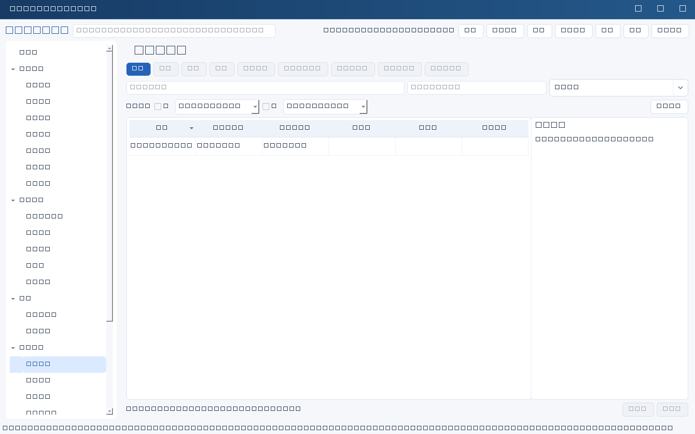
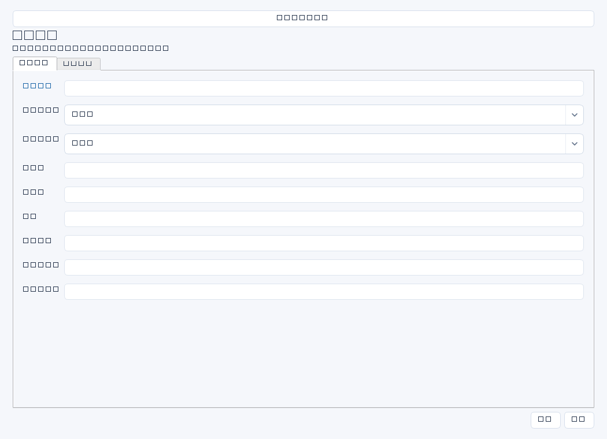

建立业务系统责任、关键性、依赖、数据等级和恢复目标的基准。系统台账用于沟通影响与连续性要求，不会自动发现系统或扫描依赖。


操作步骤与资料获取
- 与业务负责人确认系统用途和停机影响，向技术团队取得架构、接口、部署与供应商资料；把结论来源留在证据。
- 新增系统并明确业务负责人和技术负责人，描述关键性与数据等级依据；不确定的等级写待确认原因，勿凭印象定级。
- 通过业务影响分析取得RTO和RPO：业务能忍受多久中断、能接受丢失多久数据；与财务或业务签认，不把备份频率直接等同RPO。
- 核对上游接口、数据库、身份服务、网络和供应商依赖；后续用资产、权限、事件和恢复记录中的系统ID关联本系统。
字段逐项说明
| 操作 / 字段 | 详细说明 |
|---|---|
| 名称 | 系统正式名称，强制非空；建议注明环境或实例范围，避免生产与测试混淆。 |
| 业务负责人 | 确认业务影响、优先级和验收结果的人名；姓名文本，不会自动获得审批权限。 |
| 技术负责人 | 负责运维、架构和故障协调的人名；建议确保有明确替补安排。 |
| 关键性 | 自由文本，如核心/重要/一般及原因；应以业务中断影响确定，非强制枚举。 |
| 供应商 | 开发商、服务商或运维支持单位及服务边界；可写合同索引，但不是合同ID关系。 |
| 依赖 | 列数据库、网络、认证、上下游接口等及责任方；文本说明，不会自动绘制或校验依赖图。 |
| 数据等级 | 按本组织分类分级制度填写等级及依据，如内部敏感财务数据；软件不替代数据定级审查。 |
| RTO小时 | 可容忍的恢复时间目标，单位小时；可空，填写时强制非负十进制纯数字，例如4或0.5。 |
| RPO小时 | 可容忍的数据丢失时间窗口，单位小时；可空，填写时强制非负十进制纯数字。 |
| 证据 | 业务影响分析、架构图、责任确认和恢复目标签认材料的位置与版本；不直接上传附件。 |
| 备注 | 补充部署范围、运维窗口、目标未确认项及复核日期；不要放生产凭证。 |


示例（仅演示）
| 操作 / 字段 | 详细说明 |
|---|---|
| 名称 | ERP生产系统 |
| 业务负责人 | 王芳 |
| 技术负责人 | 陈晨 |
| 关键性 | 核心：中断影响出入库和月结 |
| 供应商 | 示例软件服务商；应用支持范围见合同 |
| 依赖 | 财务数据库、统一认证、仓储接口、专线网络 |
| 数据等级 | 内部敏感，含财务与供应商结算数据；按公司分级制度V2 |
| RTO小时 | 4 |
| RPO小时 | 1 |
| 证据 | BIA-ERP-202603及架构图V3；受控资料库/系统/ERP |
| 备注 | 仅生产环境；恢复目标由财务2026-03-20确认 |
形成闭环
- 让业务和技术分别确认责任、影响与恢复目标，补齐来源证据。
- 系统重大变更后复核依赖、数据等级和恢复目标，并安排相应演练验证。
- 停用系统先处理资产、权限及数据保留；有效记录仍引用该系统时，归档会被拒绝。
常见误区与边界
- RTO/RPO填“4小时”会触发数字校验，应只填4。
- 把备份成功率当作系统可恢复能力，未做恢复验证。
- 认为修改系统RTO会自动更新恢复记录：关联不代表字段同步。